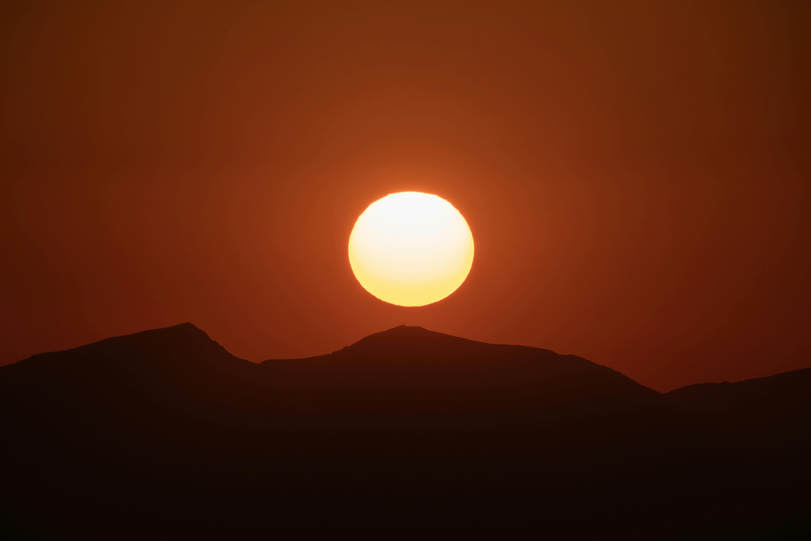
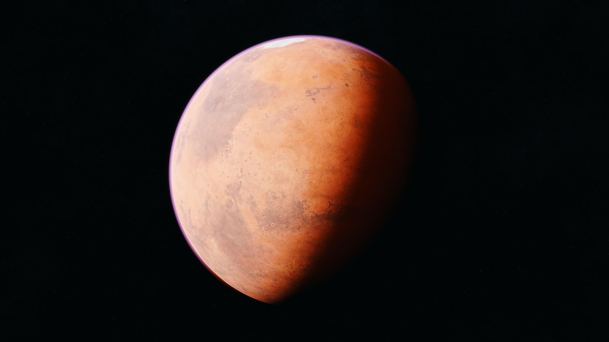
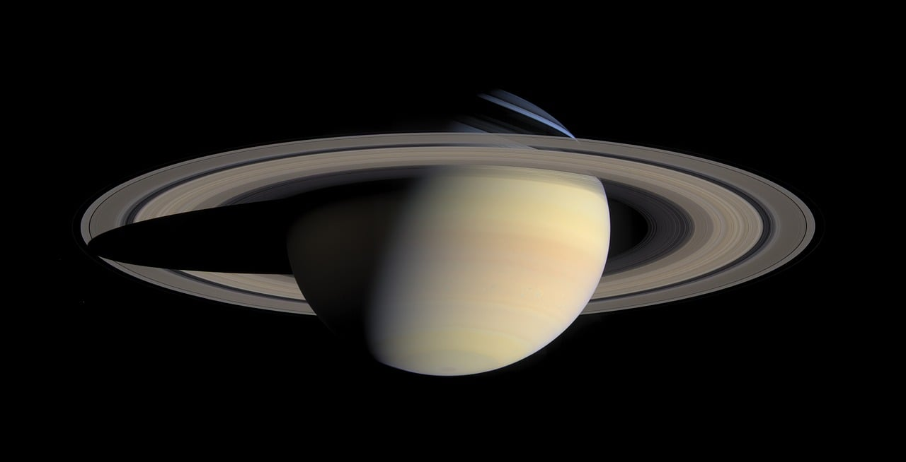

El Sistema Solar
El Sistema Solar es un sistema planetario que se mantiene unido gracias a la fuerza de gravedad del Sol. Se encuentra en uno de los brazos de la galaxia Vía Láctea y se formó hace unos 4,600 millones de años.

Planetas del sistema solar.

Es nuestro hogar y el único planeta conocido que alberga vida. Su superficie está cubierta en un 70% por agua líquida y posee una atmósfera rica en nitrógeno y oxígeno, lo que permite la regulación de la temperatura y nos protege de la radiación solar.

Es el gigante gaseoso y el planeta más grande del sistema solar (podrían caber más de 1,300 Tierras en su interior). No tiene una superficie sólida y es famoso por su Gran Mancha Roja, una tormenta gigante que ha durado cientos de años. Tiene decenas de lunas y un campo magnético poderosísimo.

Conocido como el "Planeta Rojo" debido al óxido de hierro en su suelo. Es un mundo desértico y frío con una atmósfera muy delgada. Alberga el Monte Olimpo, el volcán más grande de todo el sistema solar, y existen pruebas de que en el pasado tuvo agua líquida en su superficie.

Es el segundo planeta más grande y se distingue por su espectacular sistema de anillos, formados por trozos de hielo y roca. Al igual que Júpiter, es un gigante gaseoso compuesto principalmente de hidrógeno y helio, y es tan poco denso que, si hubiera un océano lo suficientemente grande, Saturno flotaría en él.
"El cosmos está dentro de nosotros. Estamos hechos de materia de estrellas. Somos el medio para que el cosmos se conozca a sí mismo".